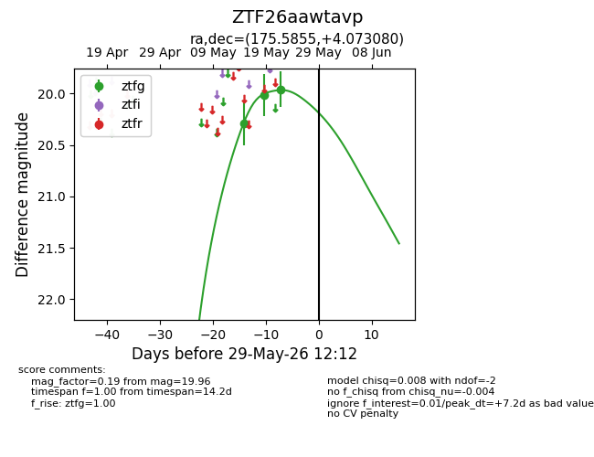
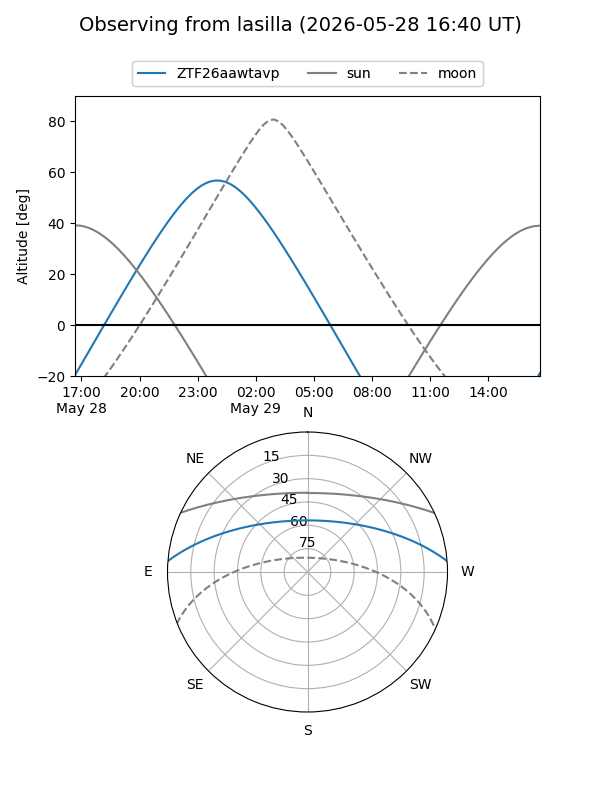
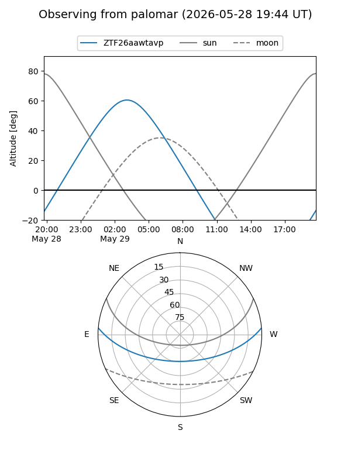
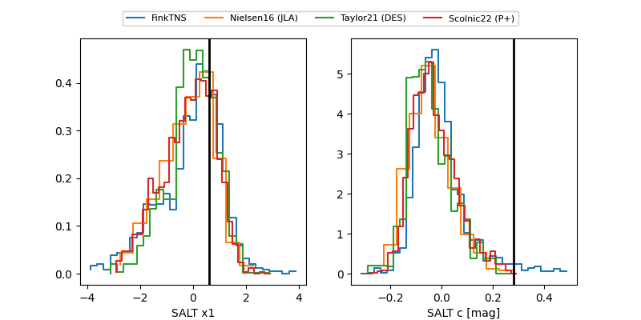

ZTF26aawtavp
Target ZTF26aawtavp at 2026-05-29 12:16
Aliases and brokers:
lsst-FINK: link
lsst-Lasair: link
lsst-ALeRCE: link
ztf-FINK: link
ztf-Lasair: link
ztf-ALeRCE: link
alt names
ZTF26aawtavp (ztf,fink_ztf)
Coordinates:
equatorial (ra, dec) = 175.5855,+4.07308
equatorial (HMS+DMS) = 11:42:20.52,+04:04:23.09
galactic (l, b) = (264.3372,+61.65289)
Flags:
Photometry:
last ztfg=19.96
3 ztfg detections
Lightcurve

Visibility


Additional plots
